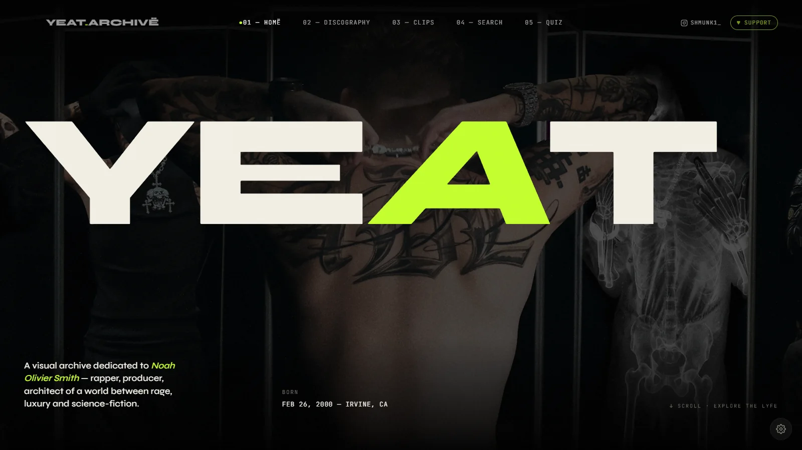
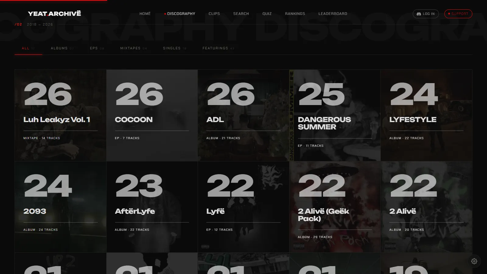
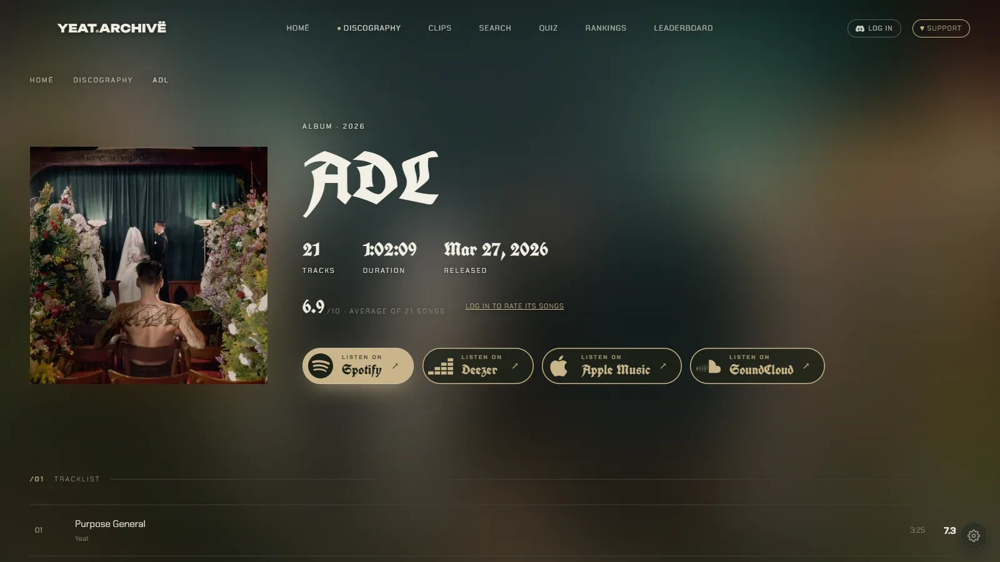
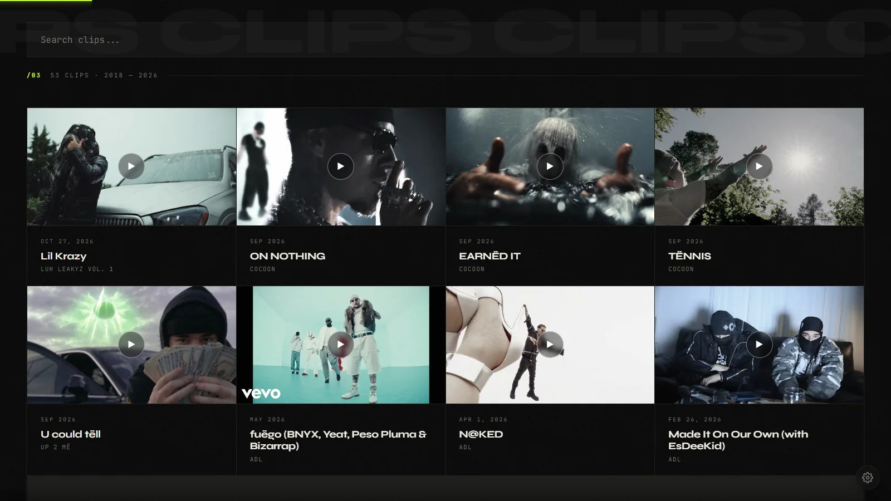
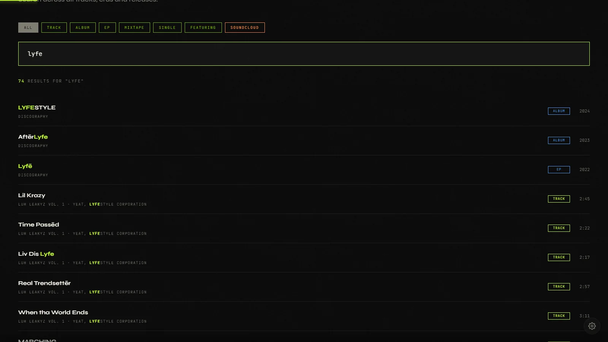
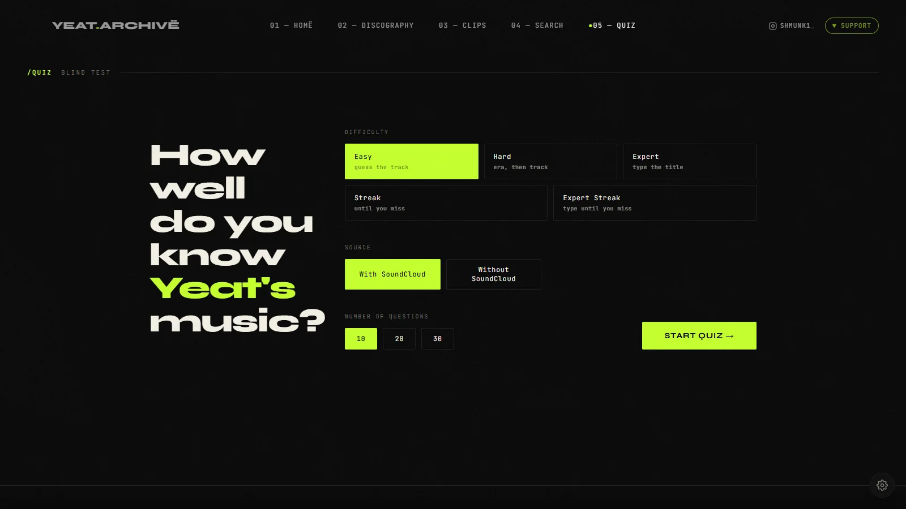

Projet Web
YEAT.
ARCHIVE
Archive visuelle dédiée au rappeur Yeat : discographie complète, clips, recherche et blind test interactif. Site fan non officiel, en ligne sur yeatarchive.com.
Contexte
Projet personnel : une archive complète de l'artiste Yeat, réunie sur un seul site.
Mon rôle
Conception, développement et intégration web, optimisation de l'expérience utilisateur, tests, mise en ligne et maintenance.
Livrable
Un site public avec discographie, pages projet, clips, recherche globale et blind test.

Captures d'écran

Page 1
Discographie
Toute la discographie de Yeat, de 2018 à aujourd'hui, classée par type : albums, EPs, mixtapes, singles et featurings.

Page 2
Pages projet
Une page pour chaque sortie, avec pochette, tracklist, durée, date de sortie et liens d'écoute vers Spotify et Deezer.

Page 3
Clips
Les clips officiels et visualizers triés par date, du plus récent au plus ancien, avec une barre de recherche dédiée.

Page 4
Recherche
Une recherche globale sur tous les morceaux, ères et sorties, avec des filtres par type de contenu.

Page 5
Quiz
Un blind test avec cinq modes de jeu, de « Easy » à « Expert Streak », et le choix du nombre de questions.